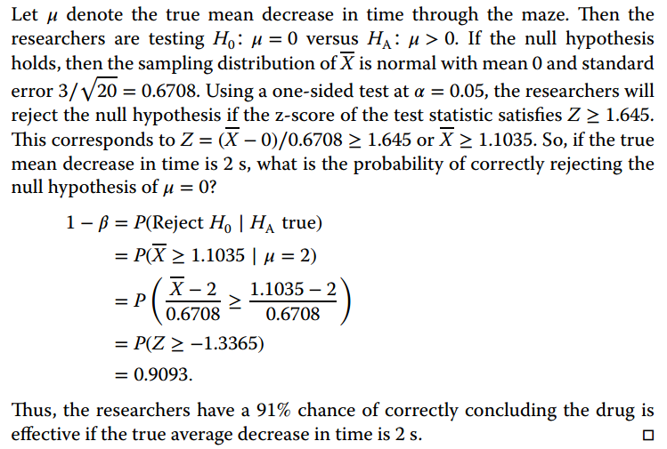

drugA <- c(0.7,-0.6,-0.2,-1.2,-0.1,3.4,3.7, 0.8,0 ,2.0)
drugB <- c(1.9,0.8 ,1.1, 0.1 ,-0.1,4.4,5.5, 1.6,4.6,3.4)
BvsA <- drugB-drugASignificance and Hypothesis Testing exercises
Problem 1
The following figures (Cushny and Peebles’ data), are quoted quote by R.A. Fisher \({ }^{1}\) from a “Student’s” paper, and show the result of an experiment with ten patients on the effect of two supposedly soporific drugs, \(A\) and \(B\), in producing sleep.
The last column gives a controlled comparison of the efficacy of the two drugs as soporifics, (a) Propose and apply a test of significance to help decide if both drugs can be considered to have the same soporific effect. (b) Answer the previous question assuming that the researchers had decide to record only the sign of the difference, but not the numerical value. (c) Answer the first question assuming that soporific A and B were not tested on the same subjects but, instead on two independent (not matched) groups of subjects.
| Patient | A | B | Difference (B - A). |
|---|---|---|---|
| 1 | +0.7 | +1.9 | +1.2 |
| 2 | -0.6 | +0.8 | +2.4 |
| 3 | -0.2 | +1.1 | +1.3 |
| 4 | -1.2 | +0.1 | +1.3 |
| 5 | -0.1 | -0.1 | 0.0 |
| 6 | +3.4 | +4.4 | +1.0 |
| 7 | +3.7 | +5.5 | +1.8 |
| 8 | +0.8 | +1.6 | +0.8 |
| 9 | 0.0 | +4.6 | +4.6 |
| 10 | +2.0 | +3.4 | +1.4 |
| Mean \((\bar{x})\) | +0.75 | +2.33 | +1.58 |
Table 1: Additional Hours of Sleep galned by the Use OF TWO TESTED DRUGS
If we compute observed statistics for each test and then the associated p-values we obtain:
Paired samples with numerical values
Here we can state the null hypothesis as: \(H_0: \mu_D = 0\)
We can rely on a student’s T statistic, tha, as a corollary of Fisher’s Theorem, is known to follow a \(t_n-1\) distribution. \[ \frac{\overline{X}-\mu}{S/\sqrt{n}}\sim t_{n-1}, \text{where: } S^2=\frac{1}{n-1}\sum_{i=1}^n (X_i-\overline{X})^2. \]
If we compute the observed value of the test statistic yields: \(\tilde t_{obs}=3.91\).
The p-value is defined as \(P[T \geq \tilde t_{obs}| H_0] = P[t_{n-1}\tilde t_{obs}| H_0]\)
This can be computed in r as:
pt(3.91,9,lower.tail=FALSE)[1] 0.001782377The p-value is very small so it is very unlikely that the observed difference is due to chance which leads us to decide \(H_0\) is not acceptable, that is, there is a significant difference between the drugs.
Paired samples. Only signs
Assume we have paired samples and only the signs of the differences
In that case, although we still aim at determining if the drugs have the same effect we can only work with the “number of positive signs”.
The statistic “\(\mathrm{N}=\) # of positive signs” in a sample of \(n\) observations where the probability of obtaining a positive sign is \(p\) follows a binomial distribution:
\[ N_{n, p} \sim B(n, p) \]
Now the null hypothesis can be stated as: \(H_{0}: p=1 / 2\) which means that under this null hypothesis
\[ N_{n . p} \sim \operatorname{Bin}(n=10, p=0.5) \]
Now, given that we he observed 9 positive signs, the observed value of the statistic is \(\tilde{n}_{\text {obs }}=9\) and the p-value can be computed as:
\[ P\left[N_{n, p} \geq \tilde{n}_{\text {obs }} \mid H_{0}\right]=P\left[N_{10,0.5} \geq \tilde{n}_{\text {obs }}\right]=p(N=9)+p(N=10) \]
This can be computed using R as:
p10<- dbinom( 10,10,0.5)
p9<- dbinom (9,10,0.5)
p9+p10[1] 0.01074219The p-value is still small (though not so much as in the previous case) so it is unlikely that the observed difference is due to chance which leads us to decide \(H_{0}\) is not acceptable, that is, there is a significant difference between the drugs.
Notice that in this case, the strength of evidence against \(H_{0}\) reflected by the p-value is smaller, which is reasonable given that we have less information about how the data deviate from the hypothesis.
Independent samples
Assume samples are independent and only the signs of the differences
If for whatever reason the drugs had been tested on distinct patients, the question about if the drugs have the same effect may be re-stated, for instance as: \(H_{0}: \mu_{A}=\mu_{B}\).
In this case we may, again, rely on a statistic whose distribution is known as a corollary of Fisher’s theorem.
Given two independent simple random samples:
\[ X_{1}, X_{2}, \ldots, X_{n_{1}} \stackrel{i i d}{\sim} N\left(\mu_{1}, \sigma_{1}\right) \quad Y_{1}, Y_{2}, \ldots, Y_{n_{2}} \stackrel{i i d}{\sim} N\left(\mu_{2}, \sigma_{2}\right) \]
The statistic
\[ \frac{\bar{X}-\bar{Y}-\left(\mu_{1}-\mu_{2}\right)}{\sqrt{\left(n_{1}-1\right) S_{1}^{2} / \sigma_{1}^{2}+\left(n_{2}-1\right) S_{2}^{2} / \sigma_{2}^{2}}} \sqrt{\frac{n_{1}+n_{2}-2}{\sigma_{1}^{2} / n_{1}+\sigma_{2}^{2} / n_{2}}} \]
is distributed as a Student’s \(t\) with \(n_{1}+n_{2}-2\) degrees of freedom. Under the assumption that \(\sigma_{1}^{2}=\sigma_{2}^{2}\) and \(n_{1}=n_{2}, \sigma^{2}\) cancels out and the statistic can be computed for the sample.
Computing the value of the statistic from the sample yields: \(\tilde{t}_{\text {obs}}= 1.80\) and using R the p-value can be computed as:
pt (q=1.80, df=18, lower.tail=FALSE)[1] 0.04432216Notice that this p-value can lead to the temptation to discuss significance with respect to a threshold, which should be avoided! Instead it is preferable to notice that there is not much evidence leading to accept there is a significant difference between the drugs.
A Hypothesis testing approach
Paired samples with values
\[ H_0: \mu_D = 0; \quad H_1: \mu_D > 0 \] Student’s T-test is the optimal test for this procedure:
t.test(BvsA, alternative = "greater")
One Sample t-test
data: BvsA
t = 3.9128, df = 9, p-value = 0.001775
alternative hypothesis: true mean is greater than 0
95 percent confidence interval:
0.7866405 Inf
sample estimates:
mean of x
1.48 Paired samples with signs
\[ H_0: \# \text{positive signs} = \# \text{negative signs} \] There is no optimal test for this problem but the signs tests or bintest provides a good approximation.
binom.test (9,10)
Exact binomial test
data: 9 and 10
number of successes = 9, number of trials = 10, p-value = 0.02148
alternative hypothesis: true probability of success is not equal to 0.5
95 percent confidence interval:
0.5549839 0.9974714
sample estimates:
probability of success
0.9 Independent samples
Under the assumption that variances are equal the two-sample t-test provides an optimal solution for this problem
\[ H_0: \mu_A = \mu_B; \quad H_0: \mu_A < \mu_B; \]
t.test(drugB,drugA, alternative = "greater", var.equal=TRUE)
Two Sample t-test
data: drugB and drugA
t = 1.7964, df = 18, p-value = 0.04461
alternative hypothesis: true difference in means is greater than 0
95 percent confidence interval:
0.05138695 Inf
sample estimates:
mean of x mean of y
2.33 0.85 Problem 2
(a) Type I error probability.
n <- 100
p <- .5
Type.I.error.prob <-
1 - ( pnorm((60.5 - n*p)/sqrt(n*p*(1-p)))
- pnorm((39.5 - n*p)/sqrt(n*p*(1-p))))
print(Type.I.error.prob)[1] 0.03572884(b) Plot the power function.
n <- 100
p <- seq(.01,.99,by=.01)
power.p <-
1 - ( pnorm((60.5 - n*p)/sqrt(n*p*(1-p)))
- pnorm((39.5 - n*p)/sqrt(n*p*(1-p))))
plot(p,power.p,type="l")
abline(v=.5,col=8)The continuity correction
Problem 4
A team of researchers plans a study to see if a certain drug can increase the speed at which mice move through a maze. An average decrease of 2 seconds through the maze would be considered effective, so the researchers would like to have a good chance of detecting a change this large or larger. Would 20 mice be a large enough sample? Assume the standard deviation is \(\sigma = 3\) sec. and that the researchers will use a significance level of \(\alpha = 0.05\).

pow<- power.t.test(n=20,
delta=2,
sd=3,
sig.level=0.05,
power=NULL,
type="one.sample",
alternative="one.sided")
show(pow)
One-sample t test power calculation
n = 20
delta = 2
sd = 3
sig.level = 0.05
power = 0.8902459
alternative = one.sidedNotice that ther is a small difference between the analytical solution and the one using the powerfunction because, in the first case we are working with the unrealistic assumption that \(\sigma\) is known. The second case (using R) assumes it is unknown and estimated.
Problem 5
Suppose the researchers in the previous example want a 95% chance of rejecting \(H_0:\, \mu = 0\) at \(\alpha = 0.01\) if the true change is a 1.5 sec. decrease in time. What is the smallest number of mice that should be included in the study?


Using R:
power.t.test(n=NULL,
delta=1.5,
sd=3,
sig.level=0.01,
power=0.95,
type="one.sample",
alternative="one.sided")
One-sample t test power calculation
n = 65.82776
delta = 1.5
sd = 3
sig.level = 0.01
power = 0.95
alternative = one.sidedAs in the previous exercise there is adifference in results due to the unrealistic assumption that \(\sigma\) is known in the first case.
Problem 7
The Poisson distribution is discrete, that’s why we cannot obtain critical regions having an exact significance level of say \(\alpha= 0.05\) or \(\alpha= 0.01\) , Instead, we iterate the computation until we find the value that defines a critical region with size \(\leq \alpha\)
(b)
k<-0:20
(alpha.0.k <- (1-ppois(k,10)) ) [1] 0.999954600 0.999500601 0.997230604 0.989663949 0.970747312 0.932914037
[7] 0.869858579 0.779779353 0.667180321 0.542070286 0.416960250 0.303223854
[13] 0.208443524 0.135535577 0.083458473 0.048740403 0.027041610 0.014277614
[19] 0.007186505 0.003454342 0.001588261(c)
k<-1:10
(alpha.0.k <- ppois(k-1,10) ) [1] 4.539993e-05 4.993992e-04 2.769396e-03 1.033605e-02 2.925269e-02
[6] 6.708596e-02 1.301414e-01 2.202206e-01 3.328197e-01 4.579297e-01Problem 9
Permutation tests with R
z <- c(94, 197, 16, 38, 99, 141, 23)
y <- c(52, 104, 146, 10, 51, 30, 40, 27, 46)We start by computing the oberved difference in means
Calculating the mean and measuring the difference
mean(z) ; length(z)[1] 86.85714[1] 7mean(y) ; length(y)[1] 56.22222[1] 9(diffMeans0 <- mean(z) - mean(y))[1] 30.63492Now, let us perform a two-sided permutation test using the following steps:
- Let us combine the two datasets into a single dataset.
- Randomly assign each data point into either z or y, although we need to maintain the original sample size (n=7) for Z and (n=9) for y.
- After randomization, calculate the relevant statistic by taking the difference between mean(Zi) and mean(Yi).
- Repeat the steps above until we have 10000 statistics.
combined_data <- c(z, y) # combines the data
set.seed(123) # set seed for reproducibility
null_dist <- c() # declaring a vector to contain the null distributions
# performs randomization at least 100000
for (i in 1:100000) {
shuffled_data <- sample(combined_data) # randomly shuffles the data
shuffled_z <- shuffled_data[1:7] # assigns the first seven points to Z
shuffled_y <- shuffled_data[8:16] # assigns the last nine points to y
null_dist[i] <- mean(shuffled_z) - mean(shuffled_y)
}
hist(null_dist)
Add the numbers of statistics that are equal to or greater the previously computed difference in means
diffMeans0.Calculate the p-value of the permutation test by dividing the sum from step 5 by 10000 (the number of randomization performed).
(p_value <- (sum(null_dist >= diffMeans0) + sum(null_dist <= -diffMeans0))/length(null_dist))[1] 0.28004